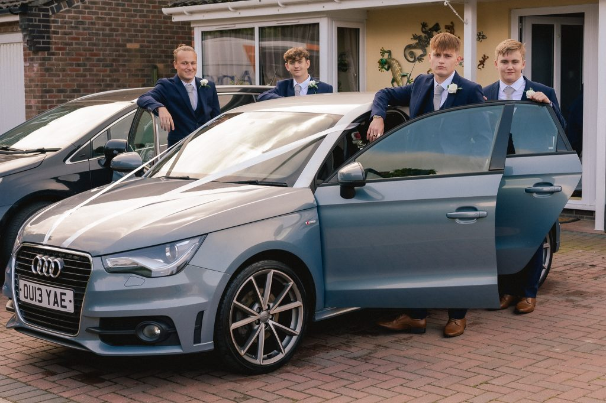
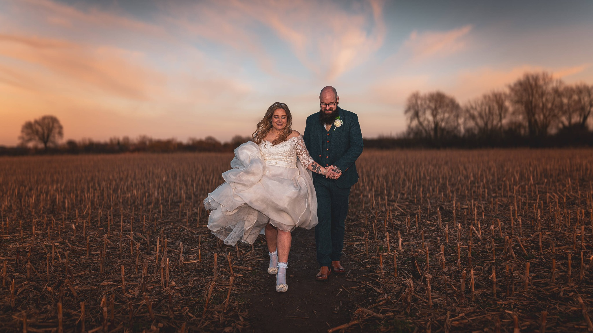
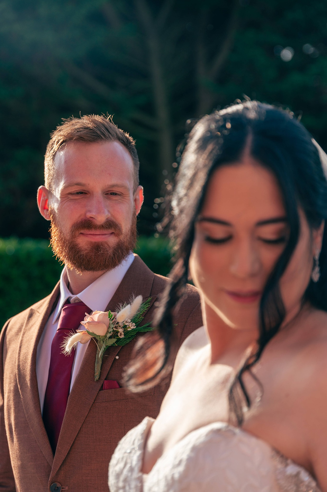
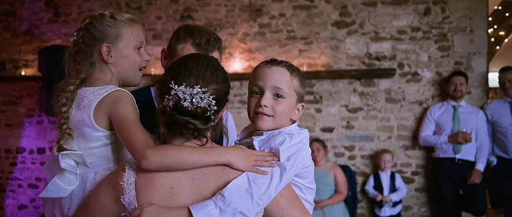
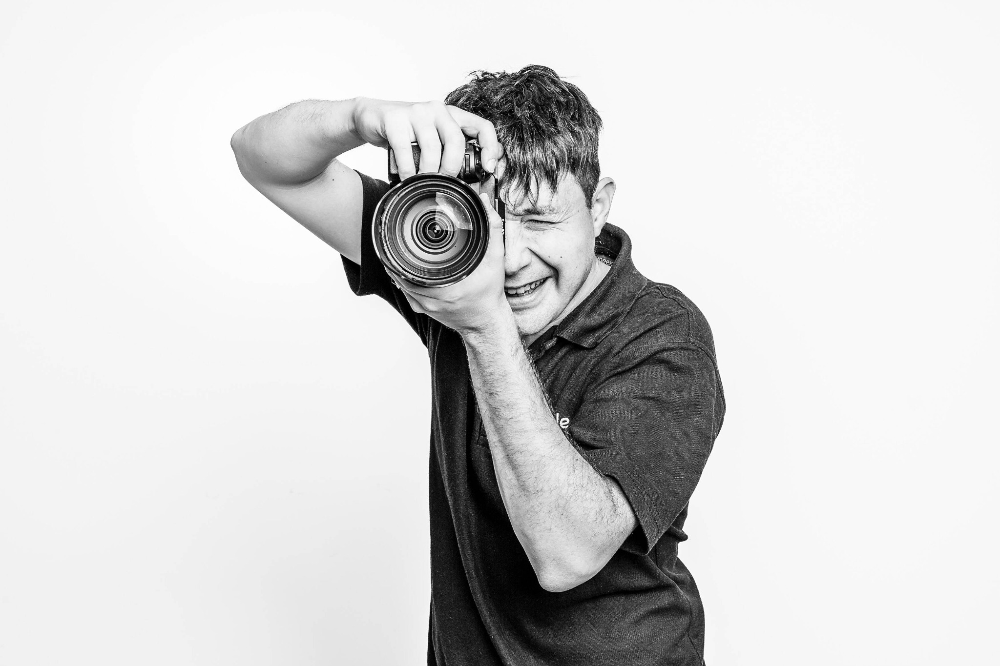

Wedding photography
Real moments, beautifully photographed
Natural, colourful photographs that bring back the atmosphere of your day without making you feel as though you are performing for the camera.
Explore photographyWedding photographer & videographer in Norfolk
Relaxed, natural and inclusive wedding photography and videography across Norfolk, Suffolk and beyond — capturing the laughter, the nerves and all the brilliant bits in between.
Relaxed wedding storytelling
Your wedding is not a photoshoot. It is a day full of people you love, unexpected laughter, happy tears, chaotic dance floors and tiny moments you might otherwise miss.
I’m Ben, the person behind Nimble. I photograph and film weddings in a natural, documentary-led way, helping you feel comfortable without turning your day into hours of posing.
Meet Ben

Choose the service that suits you
Photography and videography are offered as separate services, so you can choose exactly what feels right for your wedding.
Wedding photography
Natural, colourful photographs that bring back the atmosphere of your day without making you feel as though you are performing for the camera.
Explore photography
Wedding videography
Relaxed wedding films filled with movement, voices, laughter and all the moments that made your celebration completely yours.
Explore videographyThe Nimble approach
I’ll offer guidance when it helps, disappear into the background when it doesn’t, and make sure you have space to enjoy the day you have spent so long planning.
All couples, identities, families and ways of celebrating are genuinely welcome.
Your wedding remains a wedding, not a day-long production centred around the camera.
The honest interactions and in-between moments matter just as much as the big ones.
Clear communication, calm guidance and practical help from your first message onwards.
A glimpse of the good stuff




Hello, I’m Ben
I care about making people feel at ease. That means learning what matters to you, understanding anything that could make the day feel overwhelming, and never expecting you to fit a traditional wedding mould.
My job is to notice what is happening, help when needed and create photographs or films that feel like your day — not somebody else’s idea of what a wedding should look like.
Get to know me
Everyone celebrated here
Nimble is proudly inclusive, LGBTQIA+ welcoming and neurodivergent-aware. You do not need to explain away who you are, how your family works or what you need to feel comfortable.
Traditional, unconventional, quiet, colourful, large, tiny or somewhere in between — the best wedding is the one that feels right for you.
Tell me what you’re planningAbsolutely fantastic! Made us both feel at ease on the day and captured every moment. It was more like having an extra guest — Ben fitted right in. We could not recommend him enough.
Steve & Tony
From the journal
The journal will help couples see complete wedding stories and discover practical planning ideas, while supporting the website’s local search visibility.
Photography advice
A reassuring guide to feeling comfortable in front of the camera, with calm direction and no pressure.
Read the article →Videography advice
How voices, movement and atmosphere preserve parts of your wedding day that still images cannot.
Read the article →Wedding planning
Thoughtful advice for choosing a venue and supplier team that help your day feel relaxed and properly yours.
Read the article →Let’s talk weddings
Share as much or as little as you know so far. I’ll get back to you with availability and the right information for photography or videography.